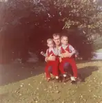

008 Krehbiel James William
Pictures related to James William (Bill) Krehbiel (Dad's brother).
← Return to Krehbiels

kre008-00001
Captioned by Dad: "Bill Krehbiel, Chris [left] and Kevin [right]." From his first marriage to Harriet.Updated: 7 Aug 2005
1 photo available in this directory.